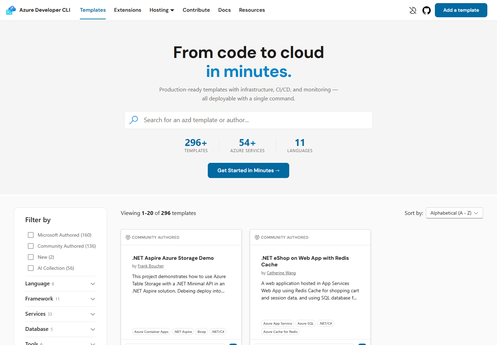

SITE 01Awesome azd ↗

A strong catalog. A shallow handoff.
Keep: broad coverage, authorship, language/service filters, and copyable azd commands.
Observed: the gallery showed 296 templates. Clicking the .NET Aspire card opened a right-hand drawer; the gallery URL stayed unchanged.
Design implication: sharing a template means sharing the catalog, not the decision context. A large hero also pushes evaluation below the first viewport.
See the opened drawer ↗